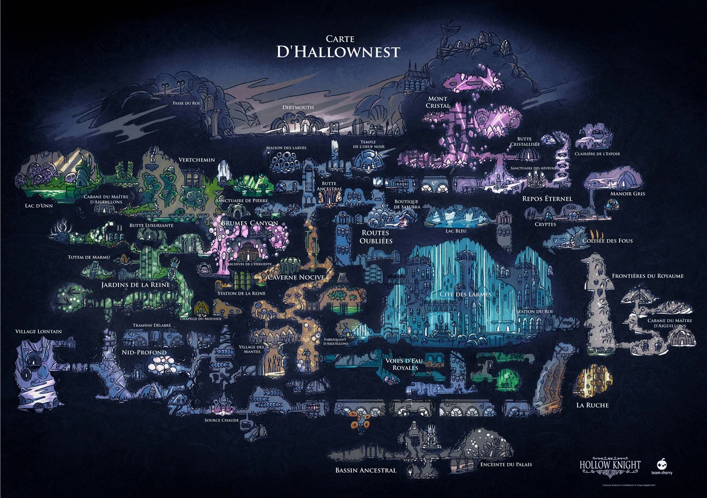
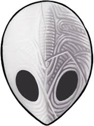

Héra la bête
Reine de la Tribu des Araignées du Nid-profond. Elle devint Rêveuse pour avoir un héritier avec
le roi pâle.
Plus tard, Hornet, sa fille, jouera un rôle important.
Monomon l'érudite
L'un des 3 Rêveurs. Chercheuse en chef de Hallownest et maître de Quirrel. Elle élabora le plan
des Rêveurs et se porta volontaire.
Lurien le veilleur
Rêveur veillant sur la Cité des Larmes depuis l'Observatoire, fidèle au Roi Pâle après le plan
de Monomon.
Hollow Knight
Vaisseau choisi par le Roi Pâle pour sceller Radiance et sauver Hallownest. Malheureusement
imparfait, Radiance influence toujours le royaume à travers son réceptacle.